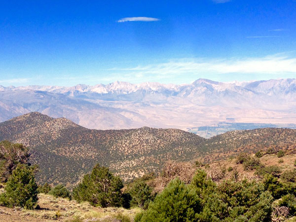

OR: Adventures in the White Mountains (Part II)
by Steve Gottlieb
|
This is the second part of my observing report from a trip to Grandview campground in the White Mountains on August 30 to Sept 3 2016. We were fortunate to observe under 4 consecutive clear, transparent nights at 8600 ft with SQM-L readings in the 21.70 - 21.82 range. This photo was taken at a view point just up the White Mountain road from the campground. Besides the stunning vistas of the eastern Sierras, it’s the only nearby location to get a reliable cell signal, so we also jokingly call it the cell phone lot. 
— Steve Gottlieb |
|
UGC 12281 is a superthin galaxy - a classification introduced in 1981 by astronomers Jean Goad and Morton Roberts. These very late-type spiral (Sc or Sd) are bulgeless galaxies seen perfectly edge-on have axial ratios from 9:1 to 20:1 Typically they have very low surface brightness, which also implies a low star formation rate. But UGC 12281 is a bit of an enigma as a it has a remarkable amount of current star formation. A recent study suggests an interaction with a nearby dwarf companion may have triggered this result. UGC 12281 is also one of the thinnest galaxies in the Flat Galaxy Catalogue (FGC) with an axial ratio of 17 to 1! At 220x it appeared extremely to very faint; extremely thin streak ~1.5'x0.1' SW-NE, slightly brighter center. Could nearly hold steadily with averted and concentration. A mag 14.2 star is just west of the southwest end. A mag 13.2 star is 1.1' W of center. I had previously observed this galaxy with my 18” Starmaster from the Bumpass Hell parking lot at Lassen Volcanic National Park.
This starburst galaxy or possible interacting pair is located in Lacerta less than 1’ NW of a mag 10.9 star! At 200x it appeared moderately bright, elongated 5:2
N-S, 0.7'x0.3', bright core. A small, very faint knot or extension is at the north end. A mag 10.9 star is 0.9' SE of center. At 375x; the "knot" attached on the west side of north
end of the galaxy extends ~20"x10" NNW-SSE (slightly different PA than the main galaxy), increasing the total size of the merged glow to nearly 1.0'x0.3'. HyperLeda catalogues the
object at the north end separately as a galaxy (
This Saturn look-alike resides in Aquarius at a distance of ~340 million l.y. The classification is a Polar Ring (PRG), a rare type of galaxy with an early type disc galaxy (S0 or Sa) surrounded by a bluish ring of stars, gas and dust orbiting perpendicular to the disc. The formation process is not fully understood but probably involves the interaction of two galaxies. At 220x and 375x, I immediately picked up the central (host) galaxy of this Polar Ring galaxy as a very faint, round glow, only ~8" diameter. Occasionally the (blue) polar ring
component was seen as extremely faint and thin extensions SW-NE, increasing the dimensions to ~20"x8". Located 9' SW of mag 7.9
This compact triplet, which is squeezed into a 30" circle, resides in Pisces at a distance of ~650 million light years. The three components were resolved at 375x.
Arp placed this odd-looking galaxy in his class "Elliptical and Elliptical-like galaxies with repelling spiral arms”. Arp only included 4 galaxies in this class,
which is only based on appearance and likely not a physical description. Whatever is going on with this galaxy, it is apparently disturbed by nearby At 220x it appeared fairly faint, fairly small, roundish, 20" diameter, contains a very small brighter nucleus. A mag 15 star is 0.8' S. Forms a close interacting pair with LEDA 913872 just 30" W. At 375x an extremely faint and small glow, ~8" diameter, was visible over 50% of the time once noticed with averted vision. Forms a (physical) triplet with MCG -03-58-010 2.8' SW.
NGC 7647 is fairly faint, fairly small, slightly elongated, 30"x25", gradually increases to the center. With averted vision a very low surface brightness outer halo was detectable. This galaxy is easily the brightest galaxy (cD-type) in NGC 7647 was discovered by William Herschel with his 18.7-inch speculum reflector November 29 1785. On his 480th sweep, he recorded “extremely faint, considerably large, some doubt left. It precedes an irregular row of scattered stars.” He missed the faint companions in the cluster.
UGC 12160 is located 19' SW of mag 5.8 Using 200x UGC 12160 was easily picked up as a fairly faint, moderately large glow, elongated 4:3 ~N-S, 0.8'x0.6', diffuse, weak concentration. Based on the DSS, I picked up the core and inner halo and missed the extremely low surface brightness outer halo.
UGC 11568 is the largest and brightest in a group of four UGC galaxies with UGC 11568 appeared fairly faint, fairly large, very elongated 7:2 SW-NE, 1.4'x0.4', bright core. Bracketed by a mag 11 star 3.2' NW and a mag 10.8 star 3.1' E. UGC 11564 is extremely faint, fairly small, very elongated 3:1 WNW-ESE, 30"x10", very low surface brightness. A mag 13.5 star is at the south edge and a mag 12.5 star is 50" SW. This is a close pair of galaxies, though the fainter companion on the west end was not resolved. UGC 11571 is very faint, moderately large, very elongated ~3:1 SSW-NNE, ~45"x15", overall very low surface brightness with a small, slightly brighter core. UGC 11572 is moderately bright, fairly small, round, small bright nucleus, 20" diameter. Third in a line with UGC 11568 12.6' W and UGC 11564 22' W.
NGC 7603 is a bright Seyfert 1 galaxy. Halton Arp first mentioned a redshift anomaly with this pair in ApL, 7, 221, 1971 (not available online). NGC 7603, the
brighter galaxy, has a redshift z = .029 (~390 million ly) while its companion NGC 7603 appeared bright, small, round, contains a very small unusually bright core that increases to an extremely bright stellar nucleus! Forms a close (line of sight) pair with NGC 7603B 1.0' SE. The companion appeared extremely to very faint, extremely small, only ~6" diameter, required averted vision (V = 15.9, B = 16.7). I didn’t see the apparent connecting bridge.
This apparent merger was seen as a fairly faint, fairly small glow. The main body is elongated 5:3 NW-SE, ~25"x15". With averted vision, a very low surface brightness, diffuse extension spreads to the north of the main body. With careful viewing it appeared attached to the southeast end of the galaxy. Located 13' NE of mag 6.5 HD 13683. IC 214 is apparently the disrupted collision or merger of two galaxies with the "main body" catalogued as IC 214 NED1 and the extension to the north is IC 214 NED2 = LEDA
1279289. It forms a pair with
Arp placed this galaxy in his category "Concentric Ring Galaxies.” These rings are not the dust features in the main disk, but very low surface brightness features
in the outer halo. Arp’s image with the 200-inch is here These type of galaxies are known today as
“Shell galaxies” and these features are thought to result from the interaction of two galaxies. On the DSS and SDSS, IC 1575 appears to be a post-merger system with a prominent
curving dust slicing the galaxy from SW to NE and low surface brightness outer arcs or shells. The NW portion of the system contains the bright nucleus and is listed in NED as IC
1575A = MCG -01-03-002 and the larger SE portion is With 322x the glow is fairly faint, irregularly round, ~25" diameter. A mag 13.3 star is 0.6' S. At the northwest side is a brighter quasi-stellar knot or nucleus of IC 1575A. |


.jpg)


{kind=link}
{kind=link}